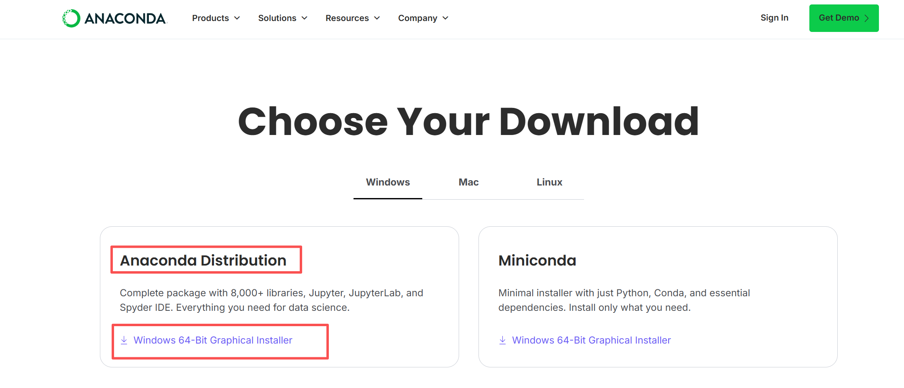
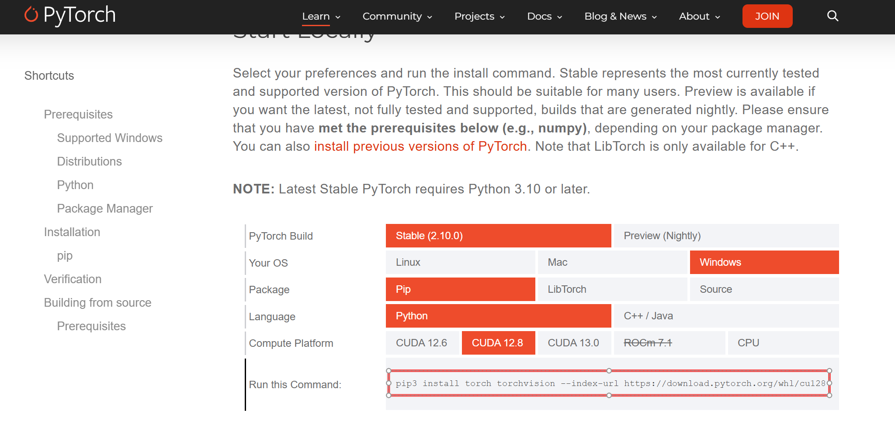

Anaconda 安装指南¶
作者：胡樾 | 记录时间：2026-02-23
环境信息
- 操作系统：Windows 11
- Python 目标版本：3.12（Anaconda 自带）
- 安装日期：2026-02-23
目录¶
- Anaconda 是什么
- 卸载旧版 Anaconda（如有）
- 下载 Anaconda
- 安装 Anaconda
- 配置 conda 镜像源
- 配置 pip 镜像源
- 验证安装
- conda 常用命令
- 虚拟环境管理
- 附录：常见问题
1. Anaconda 是什么¶
Anaconda 是一个 Python/R 的发行版，自带 conda 包管理器和大量预装的科学计算库。
1.1 Anaconda vs Miniconda vs Python¶
| 对比项 | Anaconda | Miniconda | 原生 Python |
|---|---|---|---|
| 大小 | ~1GB（安装后约 3-5GB） | ~80MB | ~30MB |
| 预装包 | 250+ 科学计算库（NumPy、Pandas、Matplotlib 等） | 仅 conda + Python | 仅 Python + pip |
| GUI | ✅ Anaconda Navigator | ❌ | ❌ |
| 包管理器 | conda + pip | conda + pip | pip |
| 适合人群 | 新手 / 一站式需求 | 老手 / 追求精简 | 极简需求 |
💡 做深度学习建议用 Anaconda： - conda 管理虚拟环境比 venv 方便（创建环境可直接指定 Python 版本） - 处理依赖冲突更智能 - 后续每个项目建独立的 conda 虚拟环境，互不干扰
1.2 为什么用虚拟环境？¶
不同项目可能需要不同版本的 Python 和库。例如：
- 项目 A 需要 Python 3.8 + PyTorch 1.13
- 项目 B 需要 Python 3.10 + PyTorch 2.0
- 项目 C 需要 Python 3.12 + PyTorch 2.6
如果全装在一起，版本冲突会让你崩溃。虚拟环境就是给每个项目创建一个独立的「房间」，互不影响。
2. 卸载旧版 Anaconda（如有）¶
如果之前安装过旧版 Anaconda / Miniconda，建议先卸载干净再安装新版。
2.1 检查是否已安装¶
打开命令提示符，执行：
如果输出版本号（如 conda 23.x.x），说明已安装。
2.2 备份旧虚拟环境（重要！）¶
卸载前先备份你需要保留的虚拟环境：
# 查看所有虚拟环境
conda env list
# 导出环境到 yml 文件（逐个导出需要的环境）
conda env export -n 环境名 > D:\conda_backup\环境名.yml
示例：
# 创建备份目录
mkdir D:\conda_backup
# 导出环境
conda env export -n torch2_env > D:\conda_backup\torch2_env.yml
conda env export -n eye_env > D:\conda_backup\eye_env.yml
💡 导出的
.yml文件记录了环境中所有包的名称和版本，后续可以用conda env create -f xxx.yml一键还原。
2.3 卸载 Anaconda¶
方法一：通过「设置」卸载（推荐）¶
- 按
Win + I打开 设置 - 进入 应用 → 已安装的应用
- 搜索
Anaconda - 点击 → 卸载
方法二：运行 Uninstall-Anaconda.exe¶
在 Anaconda 安装目录下找到卸载程序：
双击运行即可。
2.4 清理残留¶
卸载完成后，手动清理以下目录和文件（如果存在）：
- 删除 Anaconda 安装目录：
- 删除 conda 配置和缓存：
# conda 配置文件
del "%USERPROFILE%\.condarc"
# conda 缓存和环境目录
rmdir /s /q "%USERPROFILE%\.conda"
# conda 包缓存
rmdir /s /q "%USERPROFILE%\AppData\Local\conda"
- 清理环境变量：
- 右键 此电脑 → 属性 → 高级系统设置 → 环境变量
-
在 用户变量 和 系统变量 的
Path中，删除所有包含Anaconda或conda的路径，例如：C:\Anaconda3C:\Anaconda3\ScriptsC:\Anaconda3\Library\bin
-
清理注册表（可选）：
- 按
Win + R，输入regedit，回车 - 搜索
Anaconda，删除相关注册表项（谨慎操作）
2.5 卸载后验证¶
重新打开命令提示符：
如果都提示 不是内部或外部命令，说明卸载干净了。
3. 下载 Anaconda¶
3.1 下载页面¶
打开 Anaconda 官方下载页面：
或者直接访问安装包归档页面（可选择历史版本）：
3.2 选择版本¶
在下载页面，选择 Windows 64-Bit Graphical Installer。
页面会默认提供最新版本（如 Anaconda3-2025.xx-Windows-x86_64.exe）。
💡 关于安装包命名： -
Anaconda3= Python 3 版本 -2025.xx= Anaconda 发布年月 -Windows-x86_64= 64 位 Windows

4. 安装 Anaconda¶
4.1 运行安装程序¶
-
双击下载好的安装包（如
Anaconda3-2025.12-1-Windows-x86_64.exe） -
进入安装向导，点击 Next
- 阅读许可协议，点击 I Agree
- 选择安装类型：
| 选项 | 说明 |
|---|---|
| Just Me（推荐） | 仅当前用户可用，不需要管理员权限 |
| All Users | 所有用户可用，需要管理员权限 |
💡 选 Just Me 即可，除非你需要让同一台电脑上的多个 Windows 用户都能用。
- 选择安装路径：
| 建议 | 路径 |
|---|---|
| 默认路径 | C:\Users\你的用户名\Anaconda3 |
| 自定义路径（推荐） | C:\Anaconda3 |
⚠️ 路径注意事项： - 路径中 不要有中文和空格，否则后续可能出现各种奇怪问题 - 推荐安装在
C:\Anaconda3，路径短、好找、不容易出问题 - 如果 C 盘空间紧张，也可以装到其他盘（如D:\Anaconda3），但同样注意路径不要有中文和空格
- 高级安装选项：
| 选项 | 是否勾选 | 说明 |
|---|---|---|
| Create start menu shortcuts | ✅ 勾选 | 在开始菜单创建快捷方式 |
| Add Anaconda3 to my PATH environment variable | ⚠️ 看情况 | 将 Anaconda 添加到系统 PATH |
| Register Anaconda3 as my default Python | ✅ 勾选 | 将 Anaconda 的 Python 注册为系统默认 Python |
| Clear the package cache upon completion | ✅ 勾选 | 安装完成后清理缓存，节省磁盘空间 |
💡 关于「Add to PATH」：
- 官方 不推荐 勾选此项，因为可能与系统中其他 Python 冲突
- 但如果你电脑上 只用 Anaconda 作为唯一的 Python 环境，勾选会更方便（可以直接在 cmd 中使用
python、conda命令）- 如果不勾选，就需要通过 Anaconda Prompt 来使用 conda 命令
建议：如果你电脑上没有其他单独安装的 Python，勾选，用起来方便。
- 点击 Install，等待安装完成（约 5-10 分钟）
- 安装完成，点击 Next → Finish
4.2 验证安装¶
打开 Anaconda Prompt（开始菜单 → 搜索 Anaconda Prompt）或命令提示符，执行：
输出示例：
输出示例：
如果都正常输出版本号，安装成功。
5. 配置 conda 镜像源¶
默认的 conda 源服务器在国外，下载速度很慢。配置国内镜像源可以大幅提升下载速度。
5.1 配置清华源（推荐）¶
打开 Anaconda Prompt，执行以下命令：
编辑 conda 配置文件。配置文件路径为：
用记事本或 VS Code 打开该文件，替换为以下内容：
show_channel_urls: true
channel_alias: https://mirrors.tuna.tsinghua.edu.cn/anaconda
default_channels:
- https://mirrors.tuna.tsinghua.edu.cn/anaconda/pkgs/main
- https://mirrors.tuna.tsinghua.edu.cn/anaconda/pkgs/free
- https://mirrors.tuna.tsinghua.edu.cn/anaconda/pkgs/r
- https://mirrors.tuna.tsinghua.edu.cn/anaconda/pkgs/msys2
custom_channels:
conda-forge: https://mirrors.tuna.tsinghua.edu.cn/anaconda/cloud
pytorch: https://mirrors.tuna.tsinghua.edu.cn/anaconda/cloud
nvidia: https://mirrors.tuna.tsinghua.edu.cn/anaconda/cloud
ssl_verify: true
5.2 验证镜像源¶
💡 其他可选镜像源：
镜像源 地址 清华大学 https://mirrors.tuna.tsinghua.edu.cn/anaconda中科大 https://mirrors.ustc.edu.cn/anaconda北京外国语大学 https://mirrors.bfsu.edu.cn/anaconda如果清华源不稳定，可以替换为其他源。
6. 配置 pip 镜像源¶
pip 和 conda 是两个独立的包管理器，需要分别配置镜像源。
6.1 临时使用镜像源¶
在安装包时临时指定镜像：
6.2 永久配置镜像源（推荐）¶
如果用国内其他PyPI源：
pip config set global.trusted-host mirrors.aliyun.com
pip config set global.index-url https://mirrors.aliyun.com/pypi/simple/
这会在
C:\Users\你的用户名\pip\pip.ini（或%APPDATA%\pip\pip.ini）中写入配置。
6.3 验证 pip 源¶
输出应包含：
💡 常用 pip 国内镜像源：
镜像源 地址 清华大学 https://pypi.tuna.tsinghua.edu.cn/simple阿里云 https://mirrors.aliyun.com/pypi/simple/中科大 https://pypi.mirrors.ustc.edu.cn/simple/豆瓣 https://pypi.douban.com/simple/
7. 验证安装¶
7.1 命令行验证¶
打开 Anaconda Prompt 或命令提示符，执行以下命令：
# 查看 conda 版本
conda --version
# 查看 Python 版本
python --version
# 查看 conda 详细信息（安装路径、Python 版本、虚拟环境目录等）
conda info
# 查看已安装的包
conda list
7.2 Anaconda Navigator 验证¶
在开始菜单中搜索并打开 Anaconda Navigator，如果能正常启动并显示主界面，说明安装成功。
💡 Anaconda Navigator 启动比较慢（约 30 秒~1 分钟），耐心等待。日常使用建议直接用命令行操作 conda，更高效。
8. conda 常用命令¶
8.1 环境管理¶
# 查看所有虚拟环境
conda env list
# 或
conda info -e
# 创建虚拟环境（指定 Python 版本）
conda create -n 环境名 python==3.10
# 创建环境并安装常用包（-y 跳过确认）
conda create -n 环境名 python==3.10 numpy pandas matplotlib -y
# 激活环境
conda activate 环境名
# 退出当前环境（回到 base）
conda deactivate
# 删除虚拟环境
conda env remove -n 环境名
# 克隆环境
conda create -n 新环境名 --clone 旧环境名
8.2 包管理¶
# 查看当前环境已安装的包
conda list
# 安装包
conda install 包名
conda install 包名==版本号
# 安装多个包
conda install numpy pandas matplotlib -y
# 卸载包
conda remove 包名
# 更新包
conda update 包名
# 更新 conda 自身
conda update conda
# 搜索包
conda search 包名
8.3 环境导出与还原¶
# 导出当前环境到 yml 文件
conda env export > environment.yml
# 导出指定环境
conda env export -n 环境名 > 环境名.yml
# 从 yml 文件还原环境（使用 yml 中记录的环境名）
conda env create -f environment.yml
# 仅导出手动安装的包（不含依赖，更精简）
conda env export --from-history > environment.yml
导入 yml 并修改环境名¶
如果想导入一个 .yml 文件但使用**不同的环境名**（比如把 website_mkdocs_material9.yml 导入，但环境名改为 mkdocs_env），有两种方法：
方法一：用 -n 参数指定新名称
-n mkdocs_env会覆盖 yml 文件中name:字段指定的名称，直接用新名称创建环境。
方法二：先修改 yml 文件中的 name 字段
用记事本或 VS Code 打开 website_mkdocs_material9.yml，第一行通常是：
改为：
然后正常导入：
💡 推荐方法一，不需要改文件，一条命令搞定。
8.4 清理缓存¶
# 清理所有缓存（下载的包、索引缓存等）
conda clean --all -y
# 仅清理包缓存
conda clean --packages
# 仅清理索引缓存
conda clean --index-cache
8.5 conda 信息查看¶
9. 虚拟环境管理¶
9.1 创建 PyTorch 开发环境示例¶
以下是创建一个 PyTorch 深度学习环境的完整流程：
https://pytorch.org/get-started

# 1. 创建虚拟环境
conda create -n torch210_env python==3.14 -y
# 2. 激活环境
conda activate torch210_env
# 3. 安装 PyTorch（CUDA 12.8 版本）
pip3 install torch torchvision --index-url https://download.pytorch.org/whl/cu128
# 4. 安装常用科学计算库
pip install pandas matplotlib scikit-learn
# 5. 验证 PyTorch GPU 是否可用
python -c "import torch; print(f'CUDA available: {torch.cuda.is_available()}')"
💡 为什么用 pip 装 PyTorch 而不是 conda？
PyTorch 官方推荐使用 pip 进行安装。conda 渠道的 PyTorch 版本有时更新较慢，且 CUDA 版本匹配可能不如 pip 灵活。
9.2 虚拟环境命名建议¶
| 命名方式 | 示例 | 适合场景 |
|---|---|---|
| 项目名 | eye_env、mrst |
一个环境对应一个项目 |
| 框架_版本 | torch2_env、tf2_env |
按框架版本分环境 |
| 用途描述 | website_mkdocs |
按用途分环境 |
💡 建议环境名 简短、有意义、不含中文和空格。
9.3 conda 虚拟环境存放位置¶
| 类型 | 路径 | 说明 |
|---|---|---|
| 默认位置 | C:\Anaconda3\envs\环境名 |
安装 Anaconda 时位于安装目录下 |
| 用户目录 | C:\Users\你的用户名\.conda\envs\环境名 |
某些情况下环境会创建在这里 |
可以通过 conda env list 查看每个环境的实际路径。
9.4 将虚拟环境设为系统默认 Python 环境¶
安装完 Anaconda 后，系统默认使用的是 base 环境的 Python。如果你希望在任何地方（cmd、VS Code、PowerShell 等）打开就直接使用 torch210_env 环境的 Python，有以下几种方法：
方法一：修改系统 PATH 环境变量（最直接）¶
将 torch210_env 的路径放到系统 Path 的**最前面**，让系统优先找到它：
- 右键 此电脑 → 属性 → 高级系统设置 → 环境变量
- 在 用户变量 或 系统变量 中找到
Path，双击编辑 - 将以下路径添加到 最顶部（顺序很重要，排在前面的优先）：
C:\Anaconda3\envs\torch210_env
C:\Anaconda3\envs\torch210_env\Scripts
C:\Anaconda3\envs\torch210_env\Library\bin
- 确保这三条路径排在
C:\Anaconda3、C:\Anaconda3\Scripts等 base 环境路径的**上面** - 点击 确定 保存
重新打开命令提示符，验证：
python --version
# 应该显示 torch210_env 中的 Python 版本（如 Python 3.14.x）
where python
# 第一条应该是 C:\Anaconda3\envs\torch210_env\python.exe
方法二：设置 conda 自动激活指定环境（推荐）¶
让 Anaconda Prompt 和 cmd 打开时自动激活 torch210_env 而不是 base：
# 关闭默认激活 base 环境
conda config --set auto_activate_base false
# 设置自动激活 torch210_env（通过修改 Anaconda Prompt 快捷方式）
修改 Anaconda Prompt 快捷方式：
- 在开始菜单中找到 Anaconda Prompt，右键 → 更多 → 打开文件位置
- 右键 Anaconda Prompt 快捷方式 → 属性
- 在 目标 栏中找到类似：
- 把最后的
C:\Anaconda3改为你的虚拟环境路径： - 点击 确定 保存
这样每次打开 Anaconda Prompt，就会自动激活 torch210_env。
方法三：在 VS Code 中设置默认 Python 解释器¶
如果主要在 VS Code 中开发：
- 打开 VS Code
- 按
Ctrl + Shift + P，输入Python: Select Interpreter - 在列表中选择
torch210_env对应的 Python：
也可以在工作区设置中永久指定。在项目根目录创建 .vscode/settings.json：
💡 三种方法的对比：
方法 影响范围 适合场景 修改 PATH 全局（所有 cmd、PowerShell、终端） 希望在任何地方默认就是这个 Python 修改快捷方式 仅 Anaconda Prompt 只需要 Anaconda Prompt 默认激活 VS Code 设置 仅 VS Code 只在 VS Code 中开发 推荐组合：方法一（全局默认）+ 方法三（VS Code 双重保险）。
10. 附录：常见问题¶
Q1：conda 命令找不到？¶
- 如果安装时没有勾选「Add to PATH」，需要使用 Anaconda Prompt 而不是普通的 cmd
- 或者手动将以下路径添加到系统
Path中：
Q2：conda install 和 pip install 有什么区别？¶
| 对比项 | conda install | pip install |
|---|---|---|
| 包来源 | Anaconda 仓库 / conda-forge | PyPI |
| 依赖管理 | 更智能，会检查所有依赖兼容性 | 只处理直接依赖 |
| 安装速度 | 较慢（要解析依赖树） | 较快 |
| 包数量 | 较少 | 很多（几乎所有 Python 包都在 PyPI） |
💡 建议：优先用
conda install，如果 conda 仓库找不到的包，再用pip install。在同一个环境中尽量不要混用太多，以免依赖冲突。
Q3：环境创建在 C:\Users 目录下而不是 Anaconda 目录下？¶
这通常是因为 Anaconda 安装在需要管理员权限的目录（如 C:\Anaconda3），而当前用户没有写权限。可以通过以下方式指定环境创建路径：
或者修改 .condarc 配置文件，添加：
Q4：Anaconda Prompt 和普通 cmd 有什么区别？¶
Anaconda Prompt 会在启动时自动运行 conda activate base，并设置好 conda 相关的环境变量。如果安装时没有勾选「Add to PATH」，普通 cmd 中无法直接使用 conda 命令。
Q5：如何更新 Anaconda？¶
# 更新 conda 自身
conda update conda
# 更新所有包到最新版本
conda update --all
# 更新 Anaconda 元包（包含的所有默认包）
conda update anaconda
⚠️
conda update --all可能会改变很多包的版本，建议在 base 环境中谨慎使用。项目环境中更不建议随意更新。
Q6：如何完全重置 conda base 环境？¶
如果 base 环境被搞乱了：
或者直接重新安装 Anaconda（更彻底）。